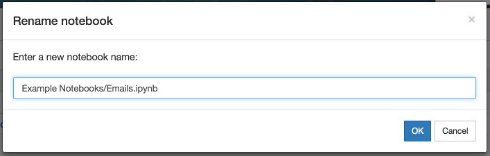
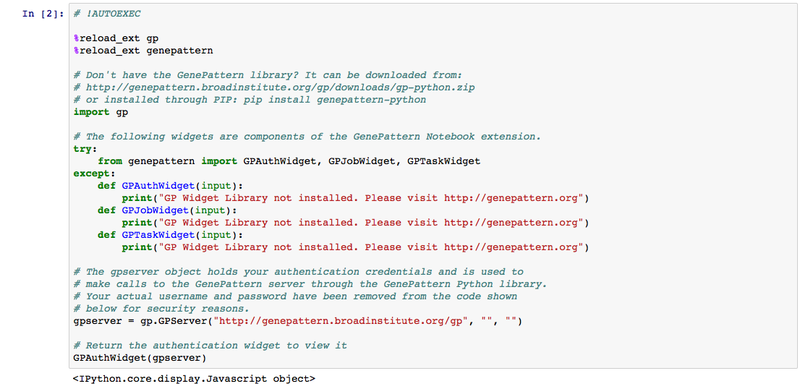
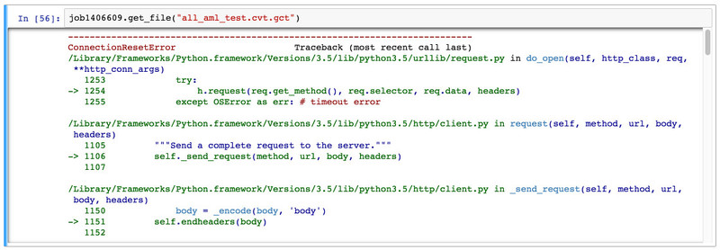

FAQ-test
Q: How do I move notebooks or other files to different directories?
A: You can move a notebook or other file to another directory by clicking the checkbox next to the file and then clicking the Rename button. At the prompt, simply type the name of the directory you wish to move the file to, followed by / (slash) and then the file’s name. For example, to move the Emails.ipynb notebook the Example Notebooks subdirectory, you would type Example Notebooks/Emails.ipynb. To move a file to the parent directory, you would rename the file ../ and then the file’s name. For example, if I wanted to move the Run an Analysis.ipynb notebook up a directory, I would rename the file ../Run an Analysis.ipynb.

Q: I opened the notebook and I only see code.
A: If you ever load a notebook and see only code instead of your GenePattern cells, this is an indicator that IPython/Jupyter has for some reason failed to load the GenePattern Notebook extension.
This issue can be solved by executing the top code cell for GenePattern. Simply select this cell and then select Cell > Run from the menu. A screenshot of the code for this cell is below.

Q: I received a "Connection Reset by Peer" Error, what does it mean?
A: If you are attempting to programmatically connect to GenePattern and receive a Connection Reset by Peer error, this is likely caused by your Python environment using an outdated version of SSL/TLS. GenePattern only accepts connections using TLS 1.2 or later.
To fix this issue you will need to update the version of OpenSSL used by your operating system or Python installation. This is particularly an issue with older versions of macOS. Instructions on how to update the version of OpenSSL used by macOS can be found here.
